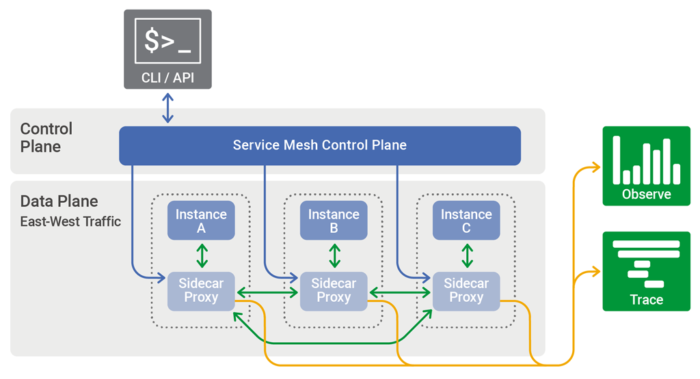
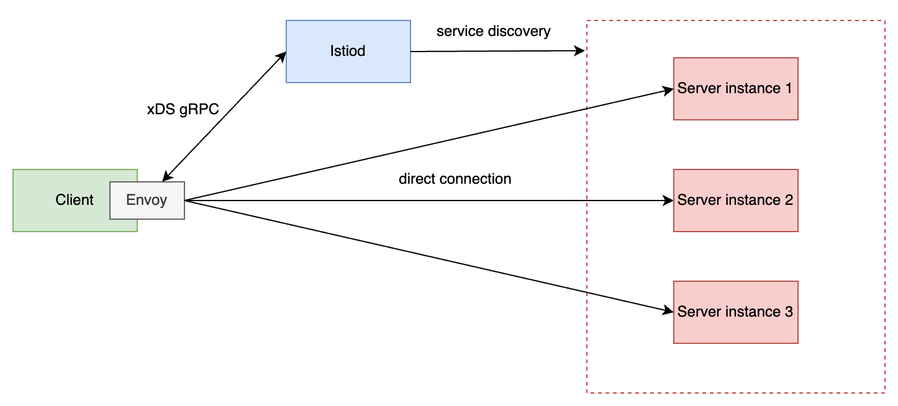
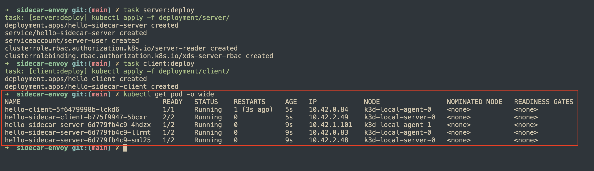
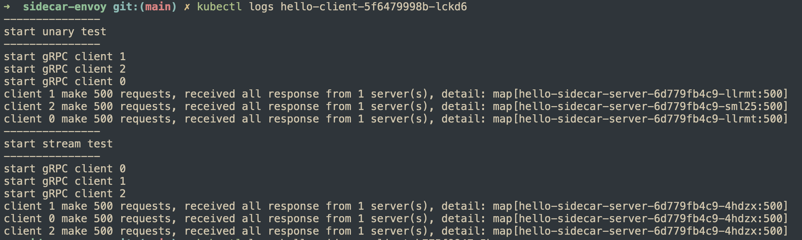
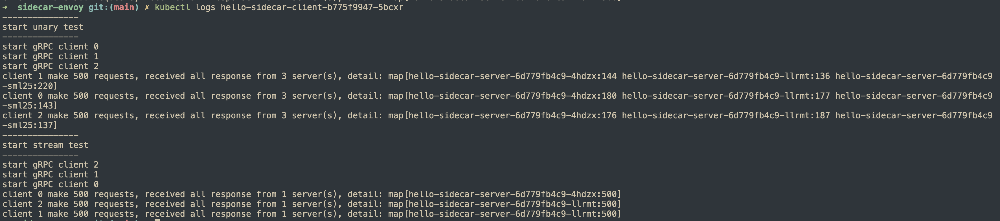

gRPC Load balancing - service mesh
Tiếp theo với chuỗi bài tìm hiểu gRPC load balancing, bài viết hôm nay thảo luận về việc sử dụng service mesh để cân bằng tải gRPC trong K8s. Chủ đề chính vẫn là gRPC load balancing nên những kiến thức khác mình chỉ lướt qua ở mức vừa đủ để các bạn có thể theo dõi bài viết.
Service mesh
Service mesh là gì?
Service mesh là công cụ tạo ra một lớp hạ tầng xử lý việc giao tiếp giữa các service trong ứng dụng, có một số tính năng nổi bật như:
- Service discovery
- Load balancing
- mTLS
- Observability
- Traceability
Kiến trúc của 1 service mesh:

Như bạn có thể thấy, có 2 thành phần chính trong service mesh:
Control plane: chịu trách nhiệm điều khiển, cấu hình các rule để quản lý mesh.Data plane: hiện thực các rule từcontrol plane, xử lý quá trình giao tiếp giữa các service trong mesh bằngsidecar proxy.
Service mesh trong K8s
Mình sử dụng Isito - Envoy proxy để hiện thực trong bài viết này.
Isito là một công cụ triển khai service mesh, chúng ta có thể triển khai trên K8s hoặc cụm máy ảo.
Control plane: Istiod.Data plane:Envoy proxyđược triển khai cùng với service trong cùng một pod.
Mô hình hoạt động cân bằng tải gRPC như sau:

Istiodsẽ đóng vai tròservice discoveryvà cập nhật choenvoy proxykhi có sự thay đổi ở backend server như scale-out, scale-in.Envoy proxysẽ cân bằng tảigRPCởlayer 7sau khi tạo connection trực tiếp tới các backend servers.
kube-proxy
Để có sự so sánh tại sao chúng ta cần dùng một công cụ ngoài K8s để cân bằng tải, hãy cùng phân tích qua những thành phần sẵn có của K8s.
Service trong K8s sử dụng kube-proxy để thực hiện việc giao tiếp network, kube-proxy sử dụng iptables để forward các gói tin từ client đến pod đang chạy các server, hoạt động chủ yếu ở layer 4, ở vai trò này nó giống như một load balancing hoạt động ở layer 4. Nếu sử dụng kube-proxy, chúng ta phải sử dụng connection pool để đảm bảo việc cân bằng tải hoạt động đúng như mong muốn.
Hiện thực
- Mình sử dụng k3d để chạy k8s ở máy local và task để làm alias cho các công việc như build hay triển khai.
- Cài istio vào cluster K8s.
Server
Phần code của server đơn giản chỉ có 2 method unary và stream, trả về pod name mỗi khi xử lý request nhằm mục đích thống kê ở phía client.
func (s *server) SayHello(ctx context.Context, req *pb.HelloRequest) (*pb.HelloResponse, error) {
fmt.Printf("server %v receive message\n", s.serverId)
return &pb.HelloResponse{ServerId: s.serverId}, nil
}
func (s *server) SayHelloStream(stream pb.DemoService_SayHelloStreamServer) error {
for {
_, err := stream.Recv()
if err != nil {
return fmt.Errorf("failed to receive a request: %v", err)
}
fmt.Printf("server %v receive message\n", s.serverId)
// Send a response back to the client
res := &pb.HelloResponse{
ServerId: s.serverId,
}
// Send the response to the client
if err := stream.Send(res); err != nil {
return fmt.Errorf("failed to send response: %v", err)
}
}
}
Triển khai với tên hello-sidecar-server và dựng một service cho cụm backend.
apiVersion: apps/v1
kind: Deployment
metadata:
name: hello-sidecar-server
labels:
app: hello-sidecar-server
sidecar.istio.io/inject: "true"
spec:
replicas: 3
selector:
matchLabels:
app: hello-sidecar-server
template:
metadata:
labels:
app: hello-sidecar-server
spec:
serviceAccountName: server-user
containers:
- name: hello-sidecar-server
ports:
- protocol: TCP
containerPort: 50051
image: localhost:5001/hello-sidecar-server:latest
env:
- name: POD_NAME
valueFrom:
fieldRef:
fieldPath: metadata.name
- name: NAMESPACE
value: "default"
resources:
limits:
cpu: "200m"
memory: "250Mi"
requests:
cpu: "100m"
memory: "100Mi"
readinessProbe:
exec:
command: [ "/bin/grpc_health_probe", "-addr=:50051", "-rpc-timeout=4s" ]
initialDelaySeconds: 5
timeoutSeconds: 5
livenessProbe:
exec:
command: [ "/bin/grpc_health_probe", "-addr=:50051", "-rpc-timeout=4s" ]
timeoutSeconds: 5
---
apiVersion: v1
kind: Service
metadata:
name: hello-sidecar-server
spec:
selector:
app: hello-sidecar-server
ports:
- port: 5005
name: hello-sidecar-server
protocol: TCP
targetPort: 50051
Client
Ở client lần này mình cũng sử dụng 2 method unary và stream để kiểm tra cách cân bằng tải bằng envoy proxy và kube-proxy.
unary test
func unaryTest(index int, wg *sync.WaitGroup) {
defer wg.Done()
target := getTarget()
conn, err := grpc.NewClient(target, grpc.WithTransportCredentials(insecure.NewCredentials()))
if err != nil {
log.Fatalf("connect to server %v fail: %v", target, err)
}
defer func() {
_ = conn.Close()
}()
client := pb.NewDemoServiceClient(conn)
responses := make(map[string]int)
fmt.Printf("start gRPC client %v\n", index)
for i := 0; i < numberOfRequests; i++ {
res, err := client.SayHello(context.Background(), &pb.HelloRequest{Name: "client"})
if err != nil {
log.Printf("client %v failed to call SayHello: %v", index, err)
continue
}
responses[res.ServerId] = responses[res.ServerId] + 1
time.Sleep(requestInterval)
}
fmt.Printf("client %v make %v requests, received all response from %v server(s), detail: %+v\n", index, numberOfRequests, len(responses), responses)
}
stream test
func streamTest(index int, wg *sync.WaitGroup) {
defer wg.Done()
target := getTarget()
conn, err := grpc.NewClient(target, grpc.WithTransportCredentials(insecure.NewCredentials()))
if err != nil {
log.Fatalf("connect to server %v fail: %v", target, err)
}
defer func() {
_ = conn.Close()
}()
client := pb.NewDemoServiceClient(conn)
responses := make(map[string]int)
fmt.Printf("start gRPC client %v\n", index)
stream, err := client.SayHelloStream(context.Background())
if err != nil {
log.Fatalf("could not call SayHello: %v", err)
}
for i := 0; i < numberOfRequests; i++ {
req := &pb.HelloRequest{
Name: fmt.Sprintf("client %d", i),
}
if err := stream.Send(req); err != nil {
log.Fatalf("failed to send request: %v", err)
}
response, err := stream.Recv()
if err != nil {
log.Fatalf("failed to receive response: %v", err)
}
responses[response.ServerId] = responses[response.ServerId] + 1
}
if err := stream.CloseSend(); err != nil {
log.Fatalf("failed to close stream: %v", err)
}
fmt.Printf("client %v make %v requests, received all response from %v server(s), detail: %+v\n", index, numberOfRequests, len(responses), responses)
}
Triển khai 2 client, có sử dụng envoy proxy và không sử dụng envoy proxy.
sidecar.istio.io/inject: "false": ngăn chặnistiodinject sidecar proxy vào pod của client.hello-sidecar-server.default.svc.cluster.local: endpoint của service backend.
File yaml triển khai client có envoy proxy.
apiVersion: apps/v1
kind: Deployment
metadata:
name: hello-sidecar-client
labels:
app: hello-sidecar-client
spec:
replicas: 1
selector:
matchLabels:
app: hello-sidecar-client
template:
metadata:
labels:
app: hello-sidecar-client
spec:
containers:
- name: hello-sidecar-client
image: localhost:5001/hello-sidecar-client:latest
env:
- name: POD_NAME
valueFrom:
fieldRef:
fieldPath: metadata.name
- name: NAMESPACE
value: "default"
- name: GRPC_SERVER_ADDR
value: "hello-sidecar-server.default.svc.cluster.local:5005"
resources:
limits:
cpu: "200m"
memory: "250Mi"
requests:
cpu: "100m"
memory: "100Mi"
File yaml triển khai client không có envoy proxy chỉ khác phần annotations.
spec:
replicas: 1
selector:
matchLabels:
app: hello-client
template:
metadata:
labels:
app: hello-client
annotations:
sidecar.istio.io/inject: "false"
Kiểm tra
Triển khai server và client bằng lệnh task server:deploy và task client:deploy.

kube-proxy
kube-proxy cân bằng tải ở layer 4 nên tất cả request từ 1 client sẽ được xử lý bởi 1 backend server duy nhất.

envoy-proxy
Envoy proxycân bằng tải ởlayer 7nên khi kiểm tra vớiunary method, requests từ 1 client có thể được xử lý bởi cả 3 backend servers.- Đối với
stream method, tất cả messages trên 1 stream đều được xử lý bởi 1 backend server duy nhất, đảm bảo tính đúng đắn về chức năng của protocol.

Tổng kết
Qua bài viết này, mình đã hiện thực service mesh trong K8s để cân bằng tải gRPC cũng như kiểm tra lại các lý thuyết đã được phân tích ở các bài viết trước. Một số kiến thức quan trọng cần lưu ý:
- Servie mesh và mô hình hoạt động.
Kube-proxyhoạt động cân bằng tải ởL4.Envoy proxyhoạt động cân bằng tải ởL7.
Mã nguồn
Bạn có thể tham khảo mã nguồn ở repository grpc-loadblancing.